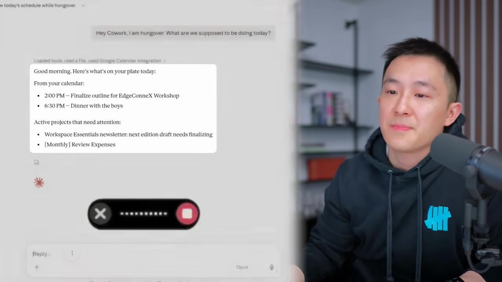
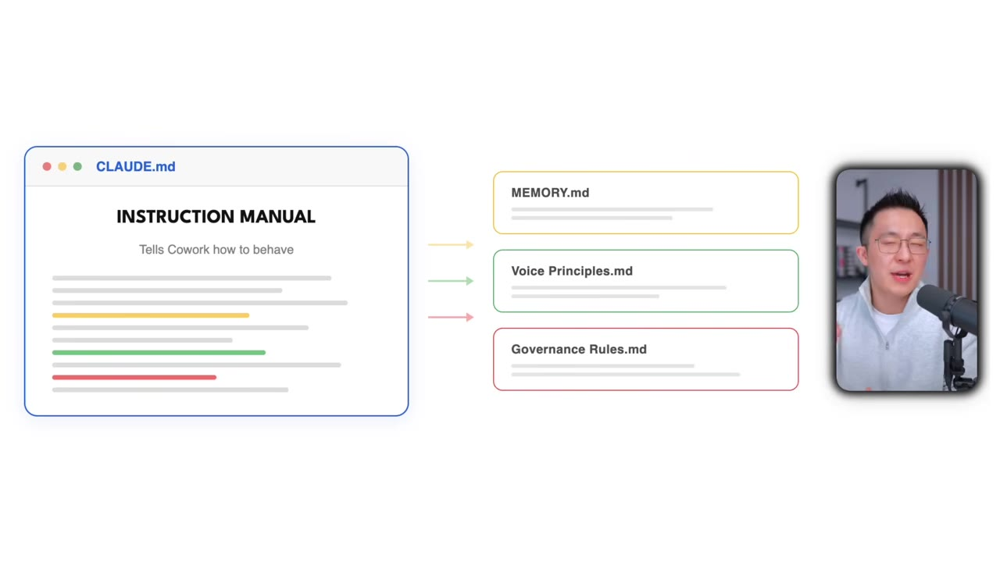
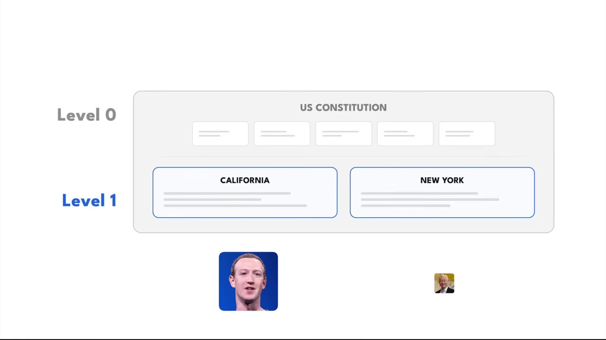
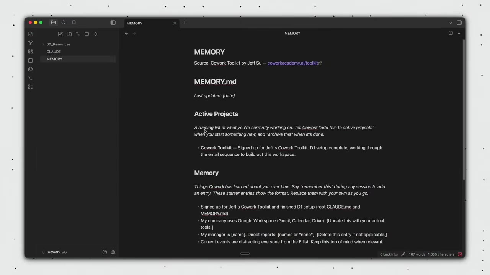
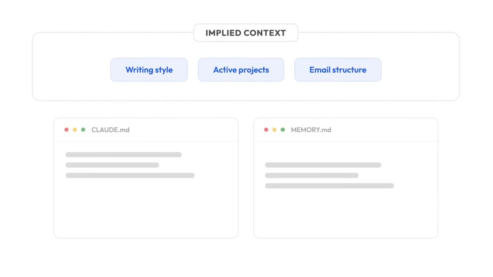
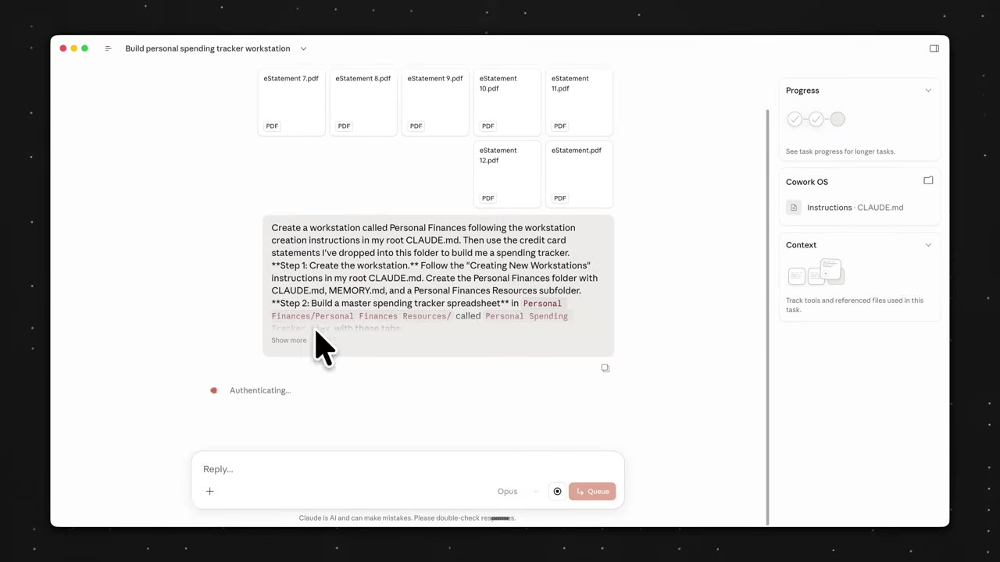
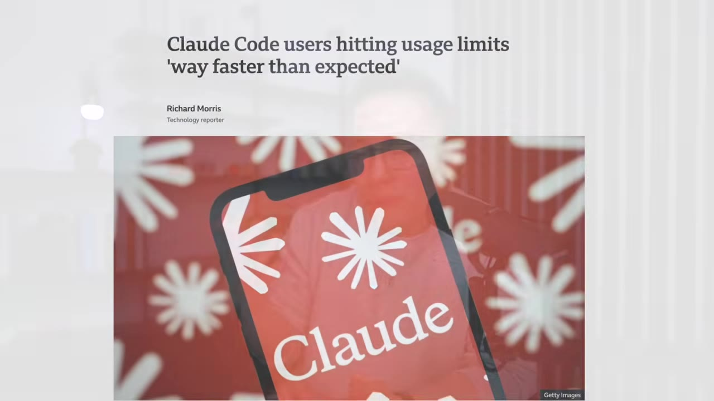

The whole setup is two plain-text files plus one idea: give Claude the context you'd otherwise repeat every session. A claude.md instruction manual, a memory.md notepad, and stackable "workstations" for each area of your life — and it's built so you don't burn through your rate limits.
Watch on YouTubeJeff (not actually hungover) just asks Cowork what's on for the day, tells it to process last month's credit-card statement, and to finalize his next newsletter in his tone of voice and link him the Notion page. It does all three, and he goes back to bed.

Here's what happened behind the scenes. The parent folder ("Claude OS" — get it, like iCloud) holds two markdown files. Every new session, Cowork reads claude.md first — the master rules for how to behave — then reads memory.md to recall what you did last time. Don't be intimidated: select all, paste it into any notes app, and you'll see it's just plain text, not code.

claude.md is the hub — it points to memory.md, voice-principles.md, and other files only when it needs the detail.00:03:36These are just simple text files, so don't be intimidated… claude.md is the instruction manual that tells Cowork how to behave, and it points to other files whenever it needs more detail. That's it. That's the entire system.— Jeff Su
Here's the analogy. The root claude.md is the US Constitution — it applies no matter what you're doing. That's level zero. One level down, each workstation (newsletter HQ, email HQ, personal finances) is a state law that stacks on top. So when you work on your newsletter, Cowork follows the root rules plus the newsletter-specific ones. You can extend this one level further to project-specific rules, but the top two levels are what matter.

Two sentences in claude.md are why Cowork has persistent memory: "At the start of every session, read memory.md before responding," and "When I say remember this, write the information to memory.md." That's it. The memory.md file has two sections — active projects (what you're working on now) and memory (entries Cowork appends when you tell it to). Tell it "remember that," start a fresh session, ask what you said, and it pulls the answer back out.

Everything here revolves around one concept: relevant context. Implied context is the stuff you inherently know but forget to tell the AI every time — your writing style, your active projects, how you like your email structured. That's the whole point of claude.md and memory.md: they remember it for you, so Cowork always has the full picture.

A voice-principles.md file bootstraps this. Paste the prompt template and Cowork extracts writing patterns from your last 30 sent emails (or, with no Gmail connected, five writing samples you pick), so your drafts sound like you — Jeff's own file runs over 150 lines.
A workstation is an area of your life, each with its own claude.md, memory.md, and resources folder. Universal workstations handle things you do everywhere — Email HQ is the clearest, since you email your team, accountant, sponsors, and friends. Dedicated workstations handle one area — personal finances live in their own world. Share the finances workstation 12 months of credit-card statements and it builds a categorized spending tracker.

Two pro tips that save you time and money. First, when you finish a session, type /session-audit — it scans the whole conversation for unsaved principles and preferences to remember next time (there's a starter skill to download and mount). Second, keep token usage low so you don't hit Claude's usage limits:

The rules, the memory, the patterns compound every single session, and you will always be ahead of someone who starts even a day after you.— Jeff Su